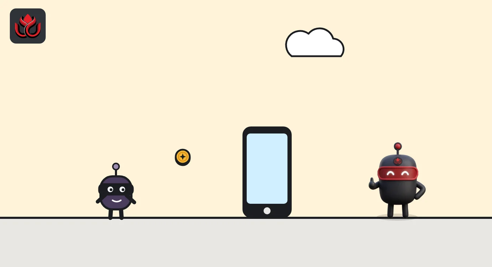
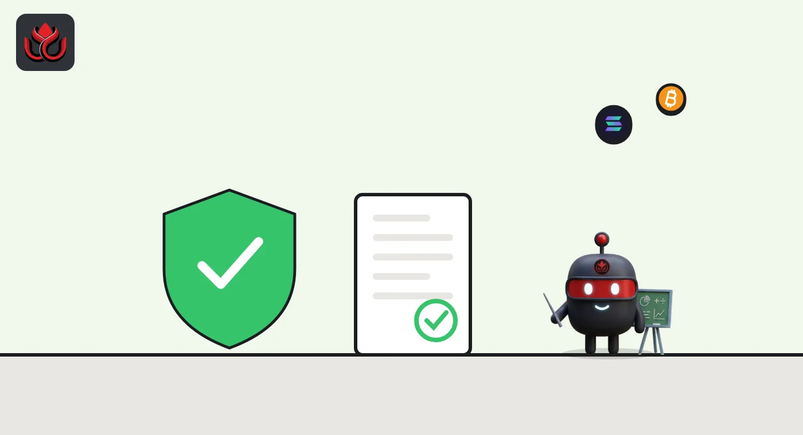

What is address poisoning? The copy-paste scam hiding in your wallet history
Address poisoning is a scam where an attacker plants a lookalike address in your transaction history and waits for you to copy it. No hacking is needed, only a tiny or fake transfer and a hurried user, and the payment cannot be reversed.
Key points
- Scammers create an address that starts and ends with the same characters as one you use, then send you a zero-value, tiny or fake-token transfer from it.
- The fake entry lands at the top of your wallet history. If you copy the address from there for your next payment, the money goes to the scammer.
- Your wallet is not hacked and your keys are safe. The attack works only if you send funds to the wrong address yourself.
- The defense is boring and effective: use an address book or name service, and check the whole address, not just the first and last few characters.
What is address poisoning?
Address poisoning is a trick that targets the way people copy crypto addresses. A blockchain address is a long string of letters and numbers, so most people check only the first and last few characters and copy the rest from somewhere handy, often their own transaction history.
Scammers exploit that habit. Hardware wallet maker Ledger explains that attackers send negligible amounts, through zero-value transfers, dust transactions or fake token contracts, so a lookalike address shows up in the victim's history. The lookalike matches the first and last characters of a real address the victim uses. Later, the victim copies it and sends funds to the scammer.
The name comes from the idea of poisoning the well: the attacker contaminates a list you trust.
How does an address poisoning attack work, step by step?
A typical attack runs like this:
- Watch. The scammer watches public blockchain data for wallets that regularly send money, for example a business paying the same supplier in stablecoins.
- Fake. The scammer generates a new address whose first and last characters match the real recipient.
- Plant. The scammer sends a transfer from the lookalike address to the victim, or makes it look as if the victim sent one. It can be worth nothing at all.
- Wait. The entry sits at the top of the victim's history, looking like a recent, familiar counterparty.
- Collect. The next time the victim copies the address from history, the payment goes to the scammer. On a blockchain, that payment cannot be reversed.

Why does it work so well?
Because nothing looks wrong. Ledger notes that the spoofed address appears at the top of your transaction history, exactly where people look for a recent recipient. The first and last characters match, the wallet shows no warning and the transfer that planted it may be too small to notice.
It also needs no access to your wallet. Your private keys and recovery phrase stay safe. That makes it different from a drained wallet, where an attacker takes funds directly. With address poisoning, you send the money yourself.
The attack has become common enough that security tools now target it. Revoke.cash, for example, lists address poisoning alongside deceptive transactions and phishing ads as scams that go beyond malicious approvals.
How is address poisoning different from a wallet drainer?
The two scams are often confused, but they work in opposite ways. A wallet drainer gets you to sign an approval or permit, and the attacker then pulls tokens out of your wallet. Ledger describes drainers as scripts or contracts that trick users into signing fraudulent transactions after they connect a wallet.
Address poisoning never asks for a signature or a connection. It does not touch your wallet at all. The attacker only edits what you see in your history and waits for you to make a normal payment to the wrong place.
That difference changes the fix. After a drainer, revoking the approval stops further theft. After address poisoning, there is nothing to revoke: the payment was valid, signed by you, and final. The only protection is checking where the money is going before you send it.
It also means that standard security advice, like keeping your recovery phrase offline or using a hardware wallet, does not prevent this scam by itself. A hardware wallet will sign a payment to a poisoned address just as reliably as to the right one, which is why the address check has to be done by a person.

Who gets targeted?
Anyone with visible transaction history can be targeted, but the scam pays best against wallets that move large sums to the same addresses again and again: traders, funds, businesses paying suppliers and people sending to their own exchange deposit address. One poisoned payment can be worth far more than the cost of thousands of fake transfers.
Because Ledger lists fake token contracts as one way to plant the entry, a transfer of a token you never bought deserves suspicion, whatever its name says.
How do you protect yourself from address poisoning?
The fixes are simple habits. Ledger recommends:
- Use your wallet's address book and save trusted recipients once, after checking them carefully.
- Use name services such as ENS, which map a readable name to an address.
- Use fresh addresses for each transaction where your wallet supports it.
- Verify the full address character by character, not just the start and end.
A few more steps help. Never copy a recipient from your transaction history. Ignore unexpected tiny or zero-value transfers and tokens you did not buy. On a hardware wallet, Ledger advises checking addresses on the device's own screen, which a compromised computer cannot change.
A small test payment helps only if you confirm with the recipient that it arrived before sending the rest. If you copied the poisoned address, the test will go to the scammer too.
What should you do if you sent funds to a poisoned address?
Move fast, but be realistic. Revoke.cash's guide for victims says stolen assets generally cannot be recovered on the blockchain. Reporting to the police and to exchanges creates a record, and that is the only route to recovery if the funds are later traced to someone.
If the money was a stablecoin such as USDT or USDC, contact the issuer and law enforcement quickly. Issuers can freeze tokens at an address; Tether, for example, describes freezes made after US authorities shared information. Watch out for follow-up scams: Revoke.cash warns that anyone who promises to recover stolen crypto is likely a scammer too.
Address poisoning is one of many low-tech attacks that sit alongside headline hacks. LC Insight's roundup of late October incidents shows how many losses come from leaked keys and hacked tools rather than broken code.
LC Insight analysis
This section is our reading of the facts above, not a statement of fact.
- Address poisoning shows why wallets must change, not just users. Hiding unknown zero-value transfers and warning when a pasted address resembles a known one would stop most cases.
- The real risk is routine. The scam works best on people who send the same payment every week and stopped checking long ago.
- Hardware wallets do not solve this one. A device signs a payment to a poisoned address as faithfully as to the right one, so the full-address check stays a human job.
What's next
- Wallets filtering zero-value and fake-token transfers from history by default
- Block explorers flagging lookalike addresses
- Poisoning campaigns aimed at large stablecoin payers
Frequently asked questions
Is my wallet hacked if I see a strange zero-value transfer?
No. A zero-value or tiny transfer from an unknown address does not give anyone access to your funds. It may be bait for address poisoning, so do not copy that address.
Should I interact with the strange tokens to remove them?
No. Ignore them. Trying to sell or move unknown tokens can lead you to a phishing site or an approval you did not intend.
Can a hardware wallet stop address poisoning?
Only partly. It shows the address you are about to sign for, but if you pasted the wrong address, the device will faithfully show the wrong address. You still have to compare it with the real one.
Does ENS remove the risk?
It lowers it, because you send to a readable name instead of a pasted string. Check the name carefully, since lookalike names are possible.
Disclaimer. This article is based on public information and the sources listed below as of the update time shown. It is for information only and is not investment, legal or tax advice. Figures may change as companies and authorities publish new data.
Sources
- Ledger Academy, The state of crypto scams (updated February 5, 2026)
- Ledger Academy, Security tips for hardware wallets
- Revoke.cash, The next chapter for the Revoke.cash extension (April 3, 2026)
- Revoke.cash, You've been scammed, now what?
- Tether, Tether supports freeze of more than $344 million in USDT (April 23, 2026)